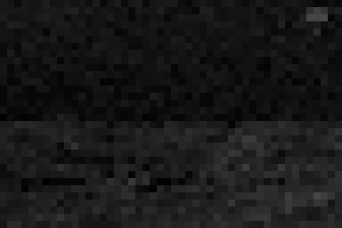
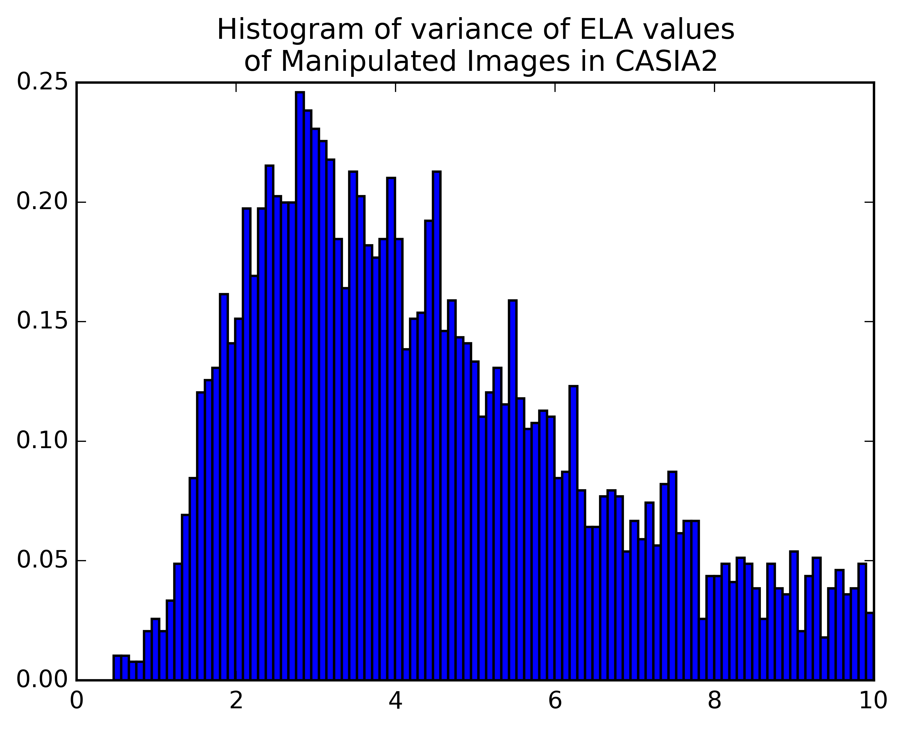

Digital Image Manipulation Forensics
UC Berkeley Master of Engineering Capstone Project
Yan Zhao, Anthony Sutardja, Omar Ramadan
Advisor: Professor James F. O'Brien
Problem
Image manipulation tools have become widespread and it is easy for an ordinary user to manipulate images
On the other hand, image manipulation detection services are way falling behind
Fake images litter the Internet
Source: Facebook.com
At times even make their way into the mainstream press

Source: The New York Times
How reliable is the information we accept as truth
Source: The New York Times
Current techniques
Format-based forgery detection
Pixel-based forgery detection
Physical environment-based forgery detection
JPEG Image Format
- Block Splitting
- Discrete Cosine Transformation
- Quantization
- Entropy Encoding
JPEG Image Format
1. Block Splitting

JPEG Image Format
2. Discrete Cosine Transformation

JPEG Image Format
3. Quantization
JPEG Image Format
4. Entropy Encoding
Run length encoding
Huffman coding
...
Blocking Artifact Measurement
How to do it
$$B(i) = \sum_{k=1}^{64}|D(k)-Q(k)\text{ round}(\frac{D(k)}{Q(k)})|$$
$$\text{BAM} = \frac{1}{N}\sum_{i}B(i)$$
Blocking Artifact Measurement
Demo

Error Level Analysis
What it is
- Error level is how much an image has been compressed
- Change of Error level is not linear
Error Level Analysis
How to do it
- Resave the given image with a known compression (90%)
- Measure the difference in pixel value between the resaved image and the given image
Error Level Analysis
Demo

Error Level Analysis
Mean of ELA values
Error Level Analysis
Variance of ELA values

Error Level Analysis
Random Forrest with Adaptive Boosting
Error Level Analysis
Low Frequency Mask
Copymove detection
Problem
Copymove detection
Process
Reverse engineering from panorama picture
Picking interest points - Harris Corner
Match between each pair for points
Copymove detection
Results
Put everything together
Neural Network

Put everything together
Convolutional Neural Network

Put everything together
Input data
Resources
- Thesis: http://bit.ly/dimfYanThesis
- Code: http://bit.ly/dimfCode
- Web Service: http://bit.ly/dimfWebService
Resources
- Thesis: http://bit.ly/dimfYanThesis
- Code: http://bit.ly/dimfCode
- Web Service: http://bit.ly/dimfWebService
Resources
- Thesis: http://bit.ly/dimfYanThesis
- Code: http://bit.ly/dimfCode
- Web Service: http://bit.ly/dimfWebService